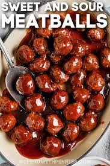

Sweet and Sour Meatballs recipe

Description
Who doesn't like sweet and sour, name says it all. Enjoy
Ingredents
- 16 Meatballs
- 1/2 cup packed brown sugar
- 1 tablespoon cornstarch
- 1 can (13'4 ounces) pineapple chunks
- 1/3 cup vinegar
- 1 tablespoon soy sauce
- 1 small green pepper, coarsely chopped
Instructions
- Cook Meatballs in skillet; remove
- Drain fat from skillet
- Mix brown sugar and cornstarch in skillet
- Stir in pineapple (with syrup), vinegar and soy sauce
- Heat to boiling, stirring constantly; reduce heat
- Add meatballs
- Cover; simmer, stirring occasionally, 10 minutes
- Stir in green pepper
- Cover; sim-mer until crisp-tender, 5 minutes